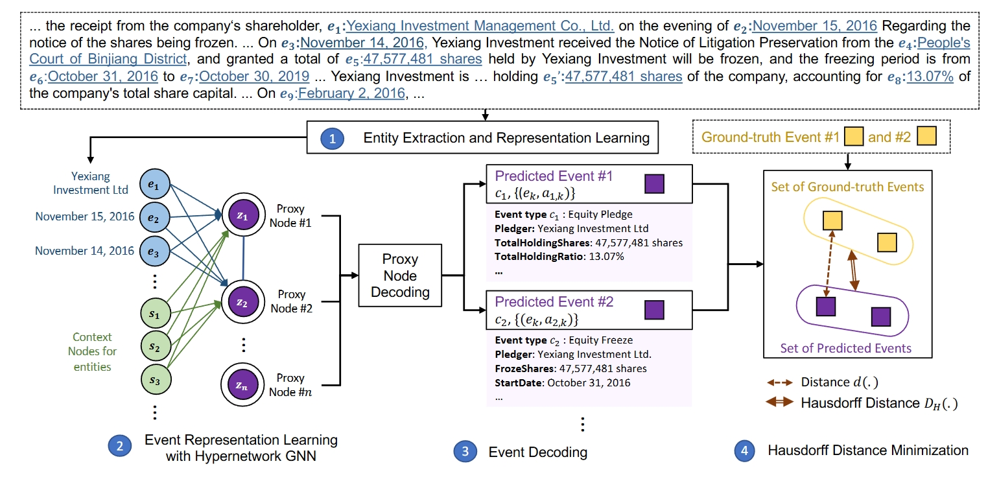

Revisit Monosemanticity from a Feature Decorrelation Perspective
To better interpret the intrinsic mechanism of large language models (LLMs), recent studies focus on monosemanticity on its basic units. A monosemantic neuron is dedicated to a single and specific concept, which forms a one-to-one correlation between neurons and concepts. Despite extensive research in monosemanticity probing, it remains unclear whether monosemanticity is beneficial or harmful to model capacity. To explore this question, we revisit monosemanticity from the feature decorrelation perspective and advocate for its encouragement.
To better interpret the intrinsic mechanism of large language models (LLMs), recent studies focus on monosemanticity on its basic units. A monosemantic neuron is dedicated to a single and specific concept, which forms a one-to-one correlation between neurons and concepts. Despite extensive research in monosemanticity probing, it remains unclear whether monosemanticity is beneficial or harmful to model capacity. To explore this question, we revisit monosemanticity from the feature decorrelation perspective and advocate for its encouragement.
Mirror(Multiple-perspective self-
reflection method for knowledge-rich reasoning)
While Large language models (LLMs) have the capability to iteratively reflect on their own outputs, recent studies have observed their struggles with knowledge-rich problems without access to external resources. In addition to the inefficiency of LLMs in self-assessment, we also observe that LLMs struggle to revisit their predictions despite receiving explicit negative feedback. Therefore, We propose Mirror, a Multiple-perspective self-reflection method for knowledge-rich reasoning, to avoid getting stuck at a particular reflection iteration.
While Large language models (LLMs) have the capability to iteratively reflect on their own outputs, recent studies have observed their struggles with knowledge-rich problems without access to external resources. In addition to the inefficiency of LLMs in self-assessment, we also observe that LLMs struggle to revisit their predictions despite receiving explicit negative feedback. Therefore, We propose Mirror, a Multiple-perspective self-reflection method for knowledge-rich reasoning, to avoid getting stuck at a particular reflection iteration.
ExDDI: Explaining Drug-Drug Interaction Predictions with Natural Language
ExDDI: Explaining Drug-Drug Interaction Predictions with Natural Language. A set of models that generate natural language explanations for DDI predictions.
ExDDI: Explaining Drug-Drug Interaction Predictions with Natural Language. A set of models that generate natural language explanations for DDI predictions.
Information-Augmented and ConsistencyEnhanced fine-tuning approach (InfoAC
We propose a novel Information-Augmented and ConsistencyEnhanced fine-tuning approach to alleviate the sensitivity of CausalLMs to the order of in-context examples.
We propose a novel Information-Augmented and ConsistencyEnhanced fine-tuning approach to alleviate the sensitivity of CausalLMs to the order of in-context examples.
PROgressive PERsonalization (PROPER)
PROgressive PERsonalization (PROPER), a novel progressive learning framework inspired by meso-level theory in social science. PROPER bridges population-level and user-level models by grouping users based on preferences and adapting LLMs in stages. It combines a Mixture-of-Experts (MoE) structure with Low Ranked Adaptation (LoRA), using a user-aware router to assign users to appropriate groups automatically. Additionally, a LoRA-aware router is proposed to facilitate the integration of individual user LoRAs with group-level LoRAs.
PROgressive PERsonalization (PROPER), a novel progressive learning framework inspired by meso-level theory in social science. PROPER bridges population-level and user-level models by grouping users based on preferences and adapting LLMs in stages. It combines a Mixture-of-Experts (MoE) structure with Low Ranked Adaptation (LoRA), using a user-aware router to assign users to appropriate groups automatically. Additionally, a LoRA-aware router is proposed to facilitate the integration of individual user LoRAs with group-level LoRAs.
Unified Task Embeddings Across Multiple Models
A framework for unified task embeddings (FUTE), harmonizing task embeddings from various models, including smaller language models and LLMs with varied prompts, within a single vector space. Such uniformity enables comparison and analysis of similarities amongst different models, broadening the scope and utility of existing task embedding methods in multi-model scenarios, while maintaining their performance comparable to architecture-specific methods.
A framework for unified task embeddings (FUTE), harmonizing task embeddings from various models, including smaller language models and LLMs with varied prompts, within a single vector space. Such uniformity enables comparison and analysis of similarities amongst different models, broadening the scope and utility of existing task embedding methods in multi-model scenarios, while maintaining their performance comparable to architecture-specific methods.
Leveraging ChatGPT in Pharmacovigilance Event Extraction
An empirical study that evaluates ChatGPT's ability on pharmacovigilance event extraction. Several zero-shot and few-shot solutions are proposed and compared with finetuned small models. We also evaluated the effect of introducing ChatGPT generated instances for data augmentation.
An empirical study that evaluates ChatGPT's ability on pharmacovigilance event extraction. Several zero-shot and few-shot solutions are proposed and compared with finetuned small models. We also evaluated the effect of introducing ChatGPT generated instances for data augmentation.
NewsQuote — News Source and Quotation Dataset
A dataset built on quote extraction and attribution for expert recommendation, consisting of 24,031 quote-speaker pairs that appeared on a COVID-19 news corpus.
A dataset built on quote extraction and attribution for expert recommendation, consisting of 24,031 quote-speaker pairs that appeared on a COVID-19 news corpus.
BTIC -- Bert-based Multimodal Fake News Detection Framework
A Bert-based multimodal fake news detection framework, which captures both textual and visual infomration from unreliable news articles utilising the contrastive learning strategy.
A Bert-based multimodal fake news detection framework, which captures both textual and visual infomration from unreliable news articles utilising the contrastive learning strategy.
LLMLINK
Repository for the paper "LLMLINK: Dual LLMs for Dynamic Entity Linking on Long Narratives with Collaborative Memorisation and Prompt Optimisation" appears in COLING2025
Repository for the paper "LLMLINK: Dual LLMs for Dynamic Entity Linking on Long Narratives with Collaborative Memorisation and Prompt Optimisation" appears in COLING2025
Disentangled Opinion Clustering (DOC)
Repository for the paper "Disentangling Aspect and Stance via a Siamese Autoencoder for Aspect Clustering of Vaccination Opinions" appears in Findings of ACL 2023
Repository for the paper "Disentangling Aspect and Stance via a Siamese Autoencoder for Aspect Clustering of Vaccination Opinions" appears in Findings of ACL 2023
Counterfactual Generation with Identifiability
Guarantees
Repository for the paper "Counterfactual Generation with Identifiability Guarantees" appear in Neurips 2023. Provide Identification guarantees for successful disentanglement of the content and style variables, further supports the intervention of latent attributes of the text. This principled representations can shed light on the constrained, i.e., safe and moral generation for large language models with noisy pertaining data.
Repository for the paper "Counterfactual Generation with Identifiability Guarantees" appear in Neurips 2023. Provide Identification guarantees for successful disentanglement of the content and style variables, further supports the intervention of latent attributes of the text. This principled representations can shed light on the constrained, i.e., safe and moral generation for large language models with noisy pertaining data.
Transformation based Adaptation for
Ratio bAlanced (TARA)
Repository for the paper "Distinguishability Calibration to In-Context Learning" appear in EACL 2023-findings. Token uniformity/Information difussion issue is still observed in in-context learning, we proposed an adaptor for more discriminative representation learning and improved performance is observed in fine-grained text classification tasks.
Repository for the paper "Distinguishability Calibration to In-Context Learning" appear in EACL 2023-findings. Token uniformity/Information difussion issue is still observed in in-context learning, we proposed an adaptor for more discriminative representation learning and improved performance is observed in fine-grained text classification tasks.
DIVA architecture
- DIVA -- Disentangling Interaction of VAriables framework for causal inference A framework tailored to mitigate the bias issue by unveiling interactions between different variables to disentangle the non-confounding covariates when estimating causal effects from text.
- DIVA -- Disentangling Interaction of VAriables framework for causal inference A framework tailored to mitigate the bias issue by unveiling interactions between different variables to disentangle the non-confounding covariates when estimating causal effects from text.

construction-modellingmodification (CMM)
Resources for the paper: "A Scalable Framework for Table of Contents Extraction from Complex ESG Annual Reports" A framework for Toc extraction, consisting of three steps: (1) Constructing an initial tree of text blocks based on reading order and font sizes; (2) Modelling each tree node (or text block) independently by considering its contextual information captured in node-centric subtree; (3) Modifying the original tree by taking appropriate action on each tree node (Keep, Delete, or Move). This construction-modellingmodification (CMM) process offers several benefits. It eliminates the need for pairwise modelling of section headings as in previous approaches, making document segmentation practically feasible. By incorporating structured information, each section heading can leverage both local and long-distance context relevant to itself.
Resources for the paper: "A Scalable Framework for Table of Contents Extraction from Complex ESG Annual Reports" A framework for Toc extraction, consisting of three steps: (1) Constructing an initial tree of text blocks based on reading order and font sizes; (2) Modelling each tree node (or text block) independently by considering its contextual information captured in node-centric subtree; (3) Modifying the original tree by taking appropriate action on each tree node (Keep, Delete, or Move). This construction-modellingmodification (CMM) process offers several benefits. It eliminates the need for pairwise modelling of section headings as in previous approaches, making document segmentation practically feasible. By incorporating structured information, each section heading can leverage both local and long-distance context relevant to itself.

Proxy
Nodes Clustering Network (ProCNet)
Code for the paper: "Document-Level Multi-Event Extraction with Event Proxy Nodes and Hausdorff Distance Minimization" An approach for document-level multi-event extraction with event proxy nodes and Hausdorff distance minimization. The event proxy nodes, representing pseudo-events, are able to build connections with other event proxy nodes, essentially capturing global information. The Hausdorff distance makes it possible to compare the similarity between the set of predicted events and the set of ground-truth events. By directly minimizing Hausdorff distance, the model is trained towards the global optimum directly, which improves performance and reduces training time.
Code for the paper: "Document-Level Multi-Event Extraction with Event Proxy Nodes and Hausdorff Distance Minimization" An approach for document-level multi-event extraction with event proxy nodes and Hausdorff distance minimization. The event proxy nodes, representing pseudo-events, are able to build connections with other event proxy nodes, essentially capturing global information. The Hausdorff distance makes it possible to compare the similarity between the set of predicted events and the set of ground-truth events. By directly minimizing Hausdorff distance, the model is trained towards the global optimum directly, which improves performance and reduces training time.
CAMANet
CAMANet: Class Activation Map Guided Attention Network A model which explicitly promotes cross-modal alignment by employing aggregated class activation maps to supervise cross-modal attention learning, and simultaneously enrich the discriminative information for radiology report generation.
CAMANet: Class Activation Map Guided Attention Network A model which explicitly promotes cross-modal alignment by employing aggregated class activation maps to supervise cross-modal attention learning, and simultaneously enrich the discriminative information for radiology report generation.
Challenges in the Evaluation of the Causal Event Extraction Task
Sourcce code and data for "Challenges in the Evaluation of the Causal Event Extraction Task"
Sourcce code and data for "Challenges in the Evaluation of the Causal Event Extraction Task"
FIPO: Free-form Instruction-oriented Prompt Optimization with Preference Dataset and Modular
Fine-tuning Schema
We present Free-form Instruction-oriented Prompt Optimization (FIPO). This approach is supported by our large-scale prompt preference dataset and employs a modular fine-tuning schema, for effective prompt optimization. The repository is under MIT license.
We present Free-form Instruction-oriented Prompt Optimization (FIPO). This approach is supported by our large-scale prompt preference dataset and employs a modular fine-tuning schema, for effective prompt optimization. The repository is under MIT license.
MemoChat
MemoChat: Tuning LLMs to Use Memos for Consistent Long-Range Open-Domain Conversation We propose MemoChat, a pipeline for refining instructions that enables large language models (LLMs) to effectively employ self-composed memos for maintaining consistent long-range open-domain conversations. The repository is under MIT license.
MemoChat: Tuning LLMs to Use Memos for Consistent Long-Range Open-Domain Conversation We propose MemoChat, a pipeline for refining instructions that enables large language models (LLMs) to effectively employ self-composed memos for maintaining consistent long-range open-domain conversations. The repository is under MIT license.

Conan
Source code for "Large Language Models Fall Short: Understanding Complex Relationships in Detective Narratives"
Source code for "Large Language Models Fall Short: Understanding Complex Relationships in Detective Narratives"
OpenToM -- Theory-of-Mind Benchmark Dataset
A benchmark for evaluating LLMs' theory-of-mind capabilities in reasoning about the physical as well as the psychological world from a character-centric perspective.
A benchmark for evaluating LLMs' theory-of-mind capabilities in reasoning about the physical as well as the psychological world from a character-centric perspective.
Thought Tree Guided Rationale Generation Framework
We propose a novel framework capable of generating more faithful rationales by mimicking the human assessment process by querying LLMs to generate a thought tree. We then summarise intermediate assessment decisions from each thought tree path for creating synthetic rationale data and rationale preference data.
We propose a novel framework capable of generating more faithful rationales by mimicking the human assessment process by querying LLMs to generate a thought tree. We then summarise intermediate assessment decisions from each thought tree path for creating synthetic rationale data and rationale preference data.
OverPrompt
OverPrompt is a prompting technique that leverages the in-context learning capability of LLMs to handle multiple task inputs, thereby reducing token and time costs for each query.
OverPrompt is a prompting technique that leverages the in-context learning capability of LLMs to handle multiple task inputs, thereby reducing token and time costs for each query.
AERA Automated Explainable Student Response Assessment Framework
A rationale generation framework that ultizes LLM's few-shot capabilities on providing explainable assessment feedbacks on student answers data.
A rationale generation framework that ultizes LLM's few-shot capabilities on providing explainable assessment feedbacks on student answers data.
CUE PLM-based Classifier Uncertainty Interpretation framework
A PLM-based text classifier uncertainty interpretation framework based on a variational autoencoder to estimate and interpret the source of the uncertainty at the token level.
A PLM-based text classifier uncertainty interpretation framework based on a variational autoencoder to estimate and interpret the source of the uncertainty at the token level.

PHEE
The repository contains the source codes and dataset for the paper: "PHEE: A Dataset for Pharmacovigilance Event Extraction from Text". The code includes the implementation of event extraction baselines on the PHEE dataset, i.e., a sequence labelling model, an extractive QA model and a generative QA model.
The repository contains the source codes and dataset for the paper: "PHEE: A Dataset for Pharmacovigilance Event Extraction from Text". The code includes the implementation of event extraction baselines on the PHEE dataset, i.e., a sequence labelling model, an extractive QA model and a generative QA model.
NapSS Narrative Prompting and Sentencematching Summarization
We propose a summarize-then-simplify two-stage strategy, which we call NapSS, identifying the relevant content to simplify while ensuring that the original narrative flow is preserved. In this approach, we first generate reference summaries via sentence matching between the original and the simplified abstracts. Then, to ensure the narrative consistency of the simplified text, we synthesize auxiliary narrative prompts combining key phrases derived from the syntactical analyses of the original text.
We propose a summarize-then-simplify two-stage strategy, which we call NapSS, identifying the relevant content to simplify while ensuring that the original narrative flow is preserved. In this approach, we first generate reference summaries via sentence matching between the original and the simplified abstracts. Then, to ensure the narrative consistency of the simplified text, we synthesize auxiliary narrative prompts combining key phrases derived from the syntactical analyses of the original text.
Bayesian
Translational model (Bayesian-Trans
The repository contains the Bayesian Learning-based Tranlation model for Event TempRel Extraction. MIT license
The repository contains the Bayesian Learning-based Tranlation model for Event TempRel Extraction. MIT license
dynamic
Brand-Topic Model (dBTM),
The repository contains the inplementation of paper "Tracking Brand-Associated Polarity-Bearing Topics in User Reviews "
The repository contains the inplementation of paper "Tracking Brand-Associated Polarity-Bearing Topics in User Reviews "

Hierarchical Interpretable Neural Text Classifier (Hint)
The repository contains the inplementation of paper "Hierarchical Interpretation of Neural Text Classification". Unsupervised self-explanatory framework for document classification. It can extract word-, sentence-, and topic-level rationales explaining the document-level decision.
The repository contains the inplementation of paper "Hierarchical Interpretation of Neural Text Classification". Unsupervised self-explanatory framework for document classification. It can extract word-, sentence-, and topic-level rationales explaining the document-level decision.

SoftDecay
The repository contains the inplementation of paper "Addressing Token Uniformity in Transformers via Singular Value Transformation". Token uniformity implies more vanished dimensions in the embedding space. _SoftDecay_ is proposed to a range of transformer-based language models and improved performance is observed in STS evaluation and a range of GLUE tasks.
The repository contains the inplementation of paper "Addressing Token Uniformity in Transformers via Singular Value Transformation". Token uniformity implies more vanished dimensions in the embedding space. _SoftDecay_ is proposed to a range of transformer-based language models and improved performance is observed in STS evaluation and a range of GLUE tasks.
Knowledge-Aware Graph (KAG) Model
The repository contains the inplementation of paper "Position Bias Mitigation: A Knowledge-Aware Graph Model for Emotion Cause Extraction". Commonsense Knowledge, i.e., ConceptNet is applied as invariant feature to tackle the distribution shift and Position Bias.
The repository contains the inplementation of paper "Position Bias Mitigation: A Knowledge-Aware Graph Model for Emotion Cause Extraction". Commonsense Knowledge, i.e., ConceptNet is applied as invariant feature to tackle the distribution shift and Position Bias.
TranCLR
Event-Centric Question Answering via Contrastive Learning and Invertible Event Transformation A novel QA model with contrastive learning and invertible event transformation for addressing event-centric QA. The repository is under MIT license.
Event-Centric Question Answering via Contrastive Learning and Invertible Event Transformation A novel QA model with contrastive learning and invertible event transformation for addressing event-centric QA. The repository is under MIT license.
Extracting Event Temporal Relations via Hyperbolic Geometry
This repository contains the source code for hyperbolic-based representation learning methods for Event TempRel Extraction. GPL-3.0 license
This repository contains the source code for hyperbolic-based representation learning methods for Event TempRel Extraction. GPL-3.0 license
XProNet: Cross-Modal Prototype Driven Network
A cross-modal prototype driven network to promote cross-modal pattern learning and exploit it to improve the task of radiology report generation. Apache 2.0 license.
A cross-modal prototype driven network to promote cross-modal pattern learning and exploit it to improve the task of radiology report generation. Apache 2.0 license.
Joint Topic Word-embedding (JTW) Model
This repository contains the source code for joint learning topics and topic-specific word embeddings.
This repository contains the source code for joint learning topics and topic-specific word embeddings.